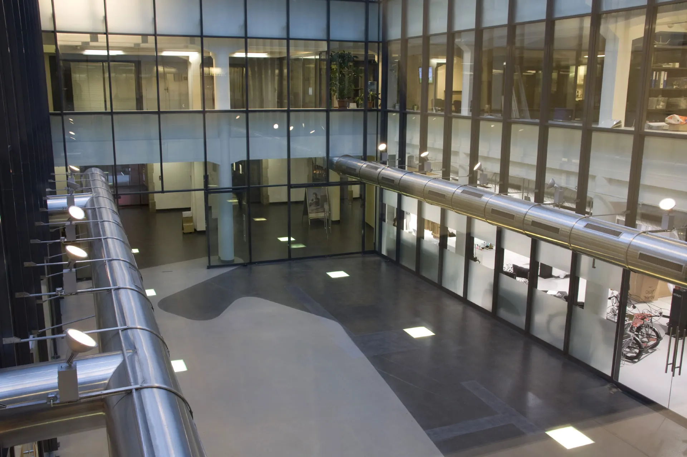
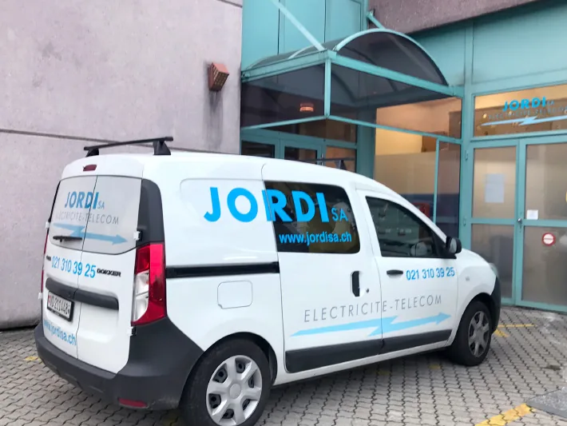
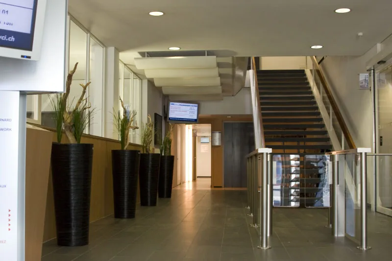
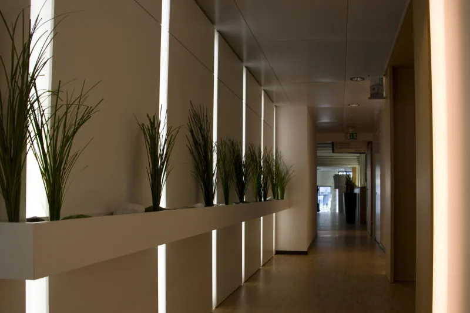
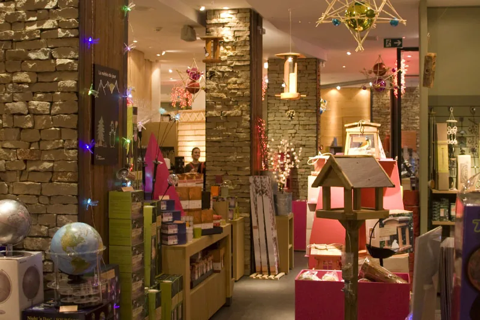
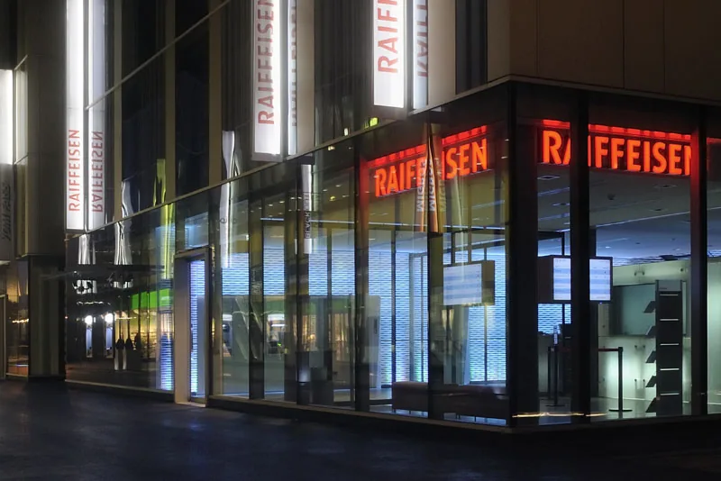

L’électricité du Grand-Lausanne, depuis 1937.
Installation, maintenance et mise en conformité, du coffret d’introduction à la prise. Dépannage dans les plus brefs délais.
Une PME lausannoise, restée à taille humaine
Jordi SA est une société familiale fondée en 1937. Elle est établie au Mont-sur-Lausanne et intervient principalement dans la région lausannoise, avec un nombre croissant de clients dans le canton de Vaud, en particulier sur la Côte.
Une petite structure, c’est de la flexibilité et de l’efficacité. L’entreprise compte aujourd’hui 12 collaborateurs qualifiés, soutenus par des programmes de perfectionnement, et a mené 427 chantiers en 2019.
- Maîtrise fédérale d’installateur-électricien
- Brevet fédéral de télématicien
- Autorisation d’installer pour toute la Suisse
- Autorisation de contrôle OIBT

Quatre métiers, un seul tableau
Tout ce qui fait fonctionner un bâtiment, installé et suivi par la même équipe.
- Courant fort
Du coffret d’introduction ou de la source d’énergie photovoltaïque jusqu’à la prise et au luminaire. Énergies durables.
- Courant faible
Sécurité, alarme, vidéo, détection incendie, sonnerie, horloge et contrôle, ainsi que la domotique des bâtiments.
- Télécoms
Installation et configuration des équipements de téléphonie VoIP, en partenariat avec MUTS.
- Téléréseau
Réseaux câblés et fibre optique, LAN, créés, développés et adaptés à vos besoins.
Maintenance et mise en conformité de toute installation électrique existante.
Des références dans tous les secteurs
Nous nous engageons sur la qualité de nos réalisations et restons au service de nos clients.




- Bâtiments administratifs et banques
- Commerces
- Écoles et institutions
- État de Vaud et communes
- Gérances et sociétés immobilières
- Industrie
- Pharmacies et centres de soins
- Restauration et associations professionnelles
Quatre-vingts ans de métier
Née dans un garage lausannois, devenue un partenaire reconnu de l’installation électrique et téléphonique de la région.
- 1937
Frédéric Jordi fonde l’entreprise à Lausanne, dans un garage. Spécialité : installation téléphonique et courant faible.
- 1952
René Jordi, fils du fondateur, rejoint l’entreprise. Elle devient Frédéric Jordi & Fils en 1958.
- 1968
Société anonyme, F. Jordi & Fils SA, dirigée par René Jordi. À la téléphonie s’ajoute l’électricité.
- 1991
Jean-Marc Pétermann, ancien apprenti de la maison, reprend la direction.
- 2012
75 ans de l’entreprise, fêtés avec les clients et les collaborateurs.
- 2015
Le siège déménage au Mont-sur-Lausanne.
- 2020
Ludovic Jossevel, installateur électricien diplômé arrivé en 2016 comme chef de projet, prend la direction.
Partenaires et associations
Jordi SA et MU Télématique Services (MUTS) mettent en commun leurs compétences : télématique et téléphonie pour Jordi, courant fort pour MUTS.
Organe de surveillance : ESTI.
Rejoindre l’équipe
Poste à pourvoir : installateur-électricien CFC. Envoyez votre candidature et votre CV par courriel.
Une panne, un projet, un devis ?
Appelez-nous ou écrivez-nous : nous vous répondons.
Zone industrielle, chemin de Budron B4 A
1052 Le Mont-sur-Lausanne
- Tél.
- 021 310 39 25
- Fax
- 021 310 39 29
- Courriel
- courriel@jordisa.ch